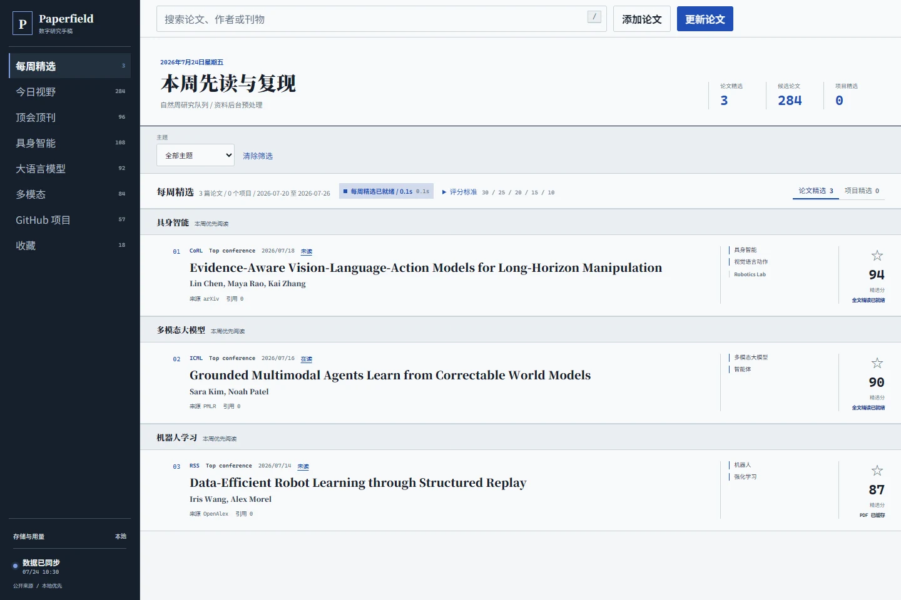

公开来源 · 本地优先 · v1.0.0
Paperfield
把论文发现、合法公开 PDF、全文精读、翻译、问答与开源项目导读汇进一份持续生长的数字研究手稿。

论文流、项目流和阅读历史在同一个浏览器工作台中连接。
一周的研究，不该散在十几个标签页里。
Paperfield 把发现、筛选、阅读、追问与回访连成一条可恢复的工作流。
- 发现聚合公开元数据
从论文源、开放获取页面与 GitHub 发现候选工作。
- 筛选按方向调整权重
学术质量、相关性、时效、证据和复现性共同决定排序。
- 精读PDF 与讲解并排
公式、翻译、引证页码和阅读笔记不离开当前上下文。
- 积累历史持续可用
收藏、状态、问答和项目源码导读在本地长期保存。
从“这篇值得看”继续走到“我真正读懂了什么”。
阅读器把原 PDF、结构化精读、公式、翻译和基于原文的对话放在一起。项目工作台则从 README 继续深入关键入口、依赖和源码阅读路径。
READING NOTE2026 / WEEK 29
Embodied agents need evidence across layers
问题设定、数据来源、训练目标、评测协议与失败案例必须放在同一条证据链中阅读。
- 原文
- 公开 PDF
- 公式
- KaTeX
- 讨论
- 基于原文
来源写清楚，推荐才有意义。
每周精选优先保留能够找到合法公开 PDF 的论文，并明确元数据、全文和项目代码各自来自哪里。
arXivOpenAlexCrossrefPMLRCVF Open AccessDBLPGitHub
自己的研究库，自己决定放在哪里。
默认保存在本机，也可以连接 Cloudflare R2 或其他 S3 兼容对象存储。朋友内测共享由登录保护，普通用户的密钥和模型列表彼此隔离。
01本机
数据库、PDF、讲解与历史保存在本地目录。
02对象存储
同步公开 PDF、精读和问答历史到受控空间。
03受保护共享
通过内测账号与 HTTPS 隧道向朋友开放。